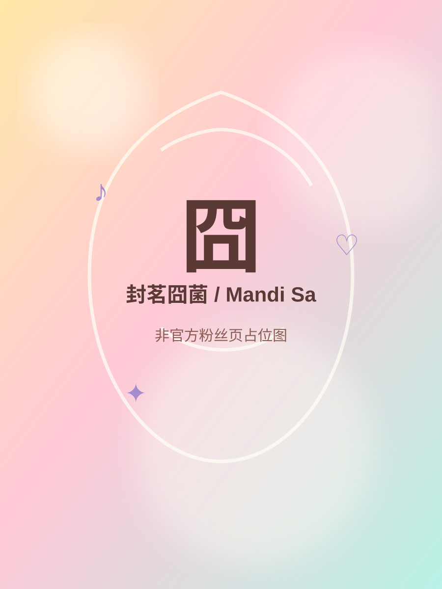

非官方资料页 · Fan-made profile site
封茗囧菌 Mandi Sa
一个爱唱歌的家伙 · 只愿菌心似我心，定不负相思意
不打包音频/照片文件，站内播放来自平台官方嵌入
♪
✦
♡

Profile
个人信息与风格关键词
以公开页面核验后的信息为主；偏好、昵称等补充资料会标注来源。
Music Player
热门曲目与站内播放
点击曲目卡片即可把 Apple Music / Bilibili / YouTube 嵌入播放器载入到页面内。部分平台仅提供预览或需登录，属于平台规则。
Platforms
各大平台主页
已核验直达链接会显示“打开主页”；仅确认 ID 但未核验唯一 URL 的平台会标注为“待补直链”。
Gallery
公开视觉图与照片墙
图片来自公开图源远程链接，不随项目打包。用于粉丝页展示；商用或二次发布请自行确认授权。
Timeline
从翻唱到原创/唱跳
简要时间线方便网页展示，更多条目可在 RESEARCH.md 或 data.js 继续扩充。
Design System
页面布局与色系
整体视觉基于淡黄色、淡粉色、乳酸白、薄荷青，并用夜樱紫点缀暗黑/戏剧风作品。
布局提示词摘要
少女感音乐人个人页；奶油黄与蜜桃粉柔光背景；玻璃拟态卡片；曲目播放器常驻；平台入口卡片；照片墙用圆角瀑布流；GSAP ScrollTrigger 做渐入、错位、视差、磁吸按钮、音符粒子。
Sources & Rights
资料来源与版权说明
每一项资料都保留来源入口。关键身份、平台与作品信息优先采用官方或平台页面；百科类资料仅作补充。